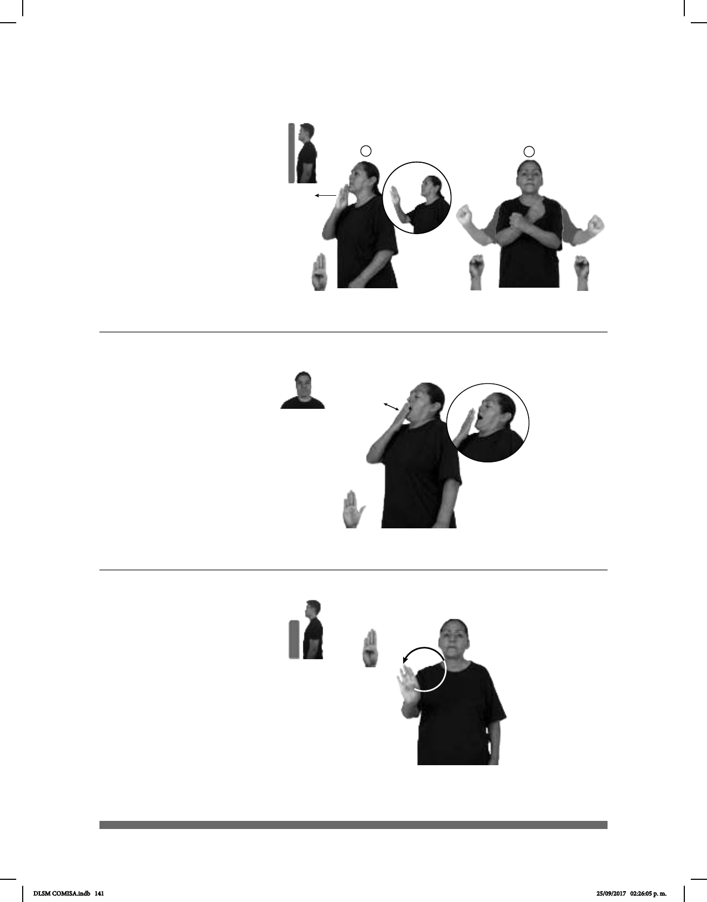

141
(B-P 91)
__muy
BOSNIA-HERZEGOVINA ESE PAÍS LEJOS
Bosnia y Herzegovina es un país muy lejano.
Seña: SC: I. SM; II. SS
I. B-P.1; II. S.1
I. Palma hacia la
izquierda; II. Las palmas inician hacia
adentro y teminan hacia afuera.
I. A la altura de la boca; II.
A la altura del pecho del centro hacia
los lados.
I. Recto hacia enfrente.
II. Las manos parten de un punto cerca-
no y luego se abren hacia los lados.
País de Europa central cuya
capital es Sarajevo.
(B-P 92)
pro-TÚ SIEMPRE CLASE pro-TÚ BOSTEZAR
Tú siempre bostezas en clase.
(B-P 93)
AÑO PASADO BOTSUANA pro-YO VIAJAR
El año pasado viajé a Botsuana.
Seña: SM
B-P.2
Palma hacia adentro.
A la altura de la boca.
La mano toca la boca
repetidamente.
Ojos
cerrados, boca abierta, cuerpo
ligeramente inclinado hacia atrás,
hombros hacia arriba.
v. intr. Hacer
involuntariamente, abriendo mucho la
boca, inspiración lenta y profunda y
luego respiración, también prolongada
y a veces ruidosa, generalmente por
sueño o tedio.
Seña: SM
B-P.1
Palma hacia afuera.
A la altura del pecho.
La mano se mueve
formando círculos hacia la derecha.
País ubicado en el sur
de África cuya capital es Gaborne.
DLSM COMISA.indb 141 25/09/2017 02:26:05 p. m.